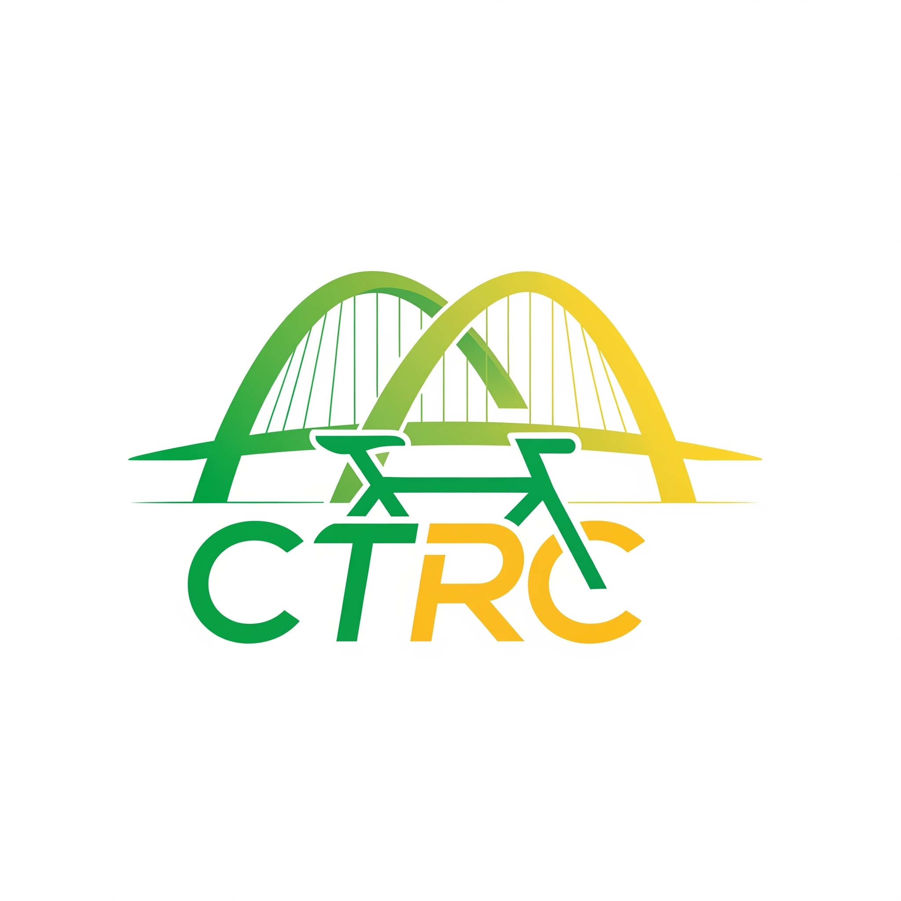

香港城市運輸單車
CTRC HK
探索城市，騎出你的專屬路線，我們是你的單車運輸夥伴。
探索單車路線關於城市運輸單車
我們致力於推廣單車作為一種可持續的城市交通方式。透過提供精心策劃的單車路線、專業知識和一個熱情的社群，我們希望讓單車成為你日常生活的一部分，讓城市生活更健康、更環保、更自由。
了解更多

探索城市，騎出你的專屬路線，我們是你的單車運輸夥伴。
探索單車路線我們致力於推廣單車作為一種可持續的城市交通方式。透過提供精心策劃的單車路線、專業知識和一個熱情的社群，我們希望讓單車成為你日常生活的一部分，讓城市生活更健康、更環保、更自由。
了解更多